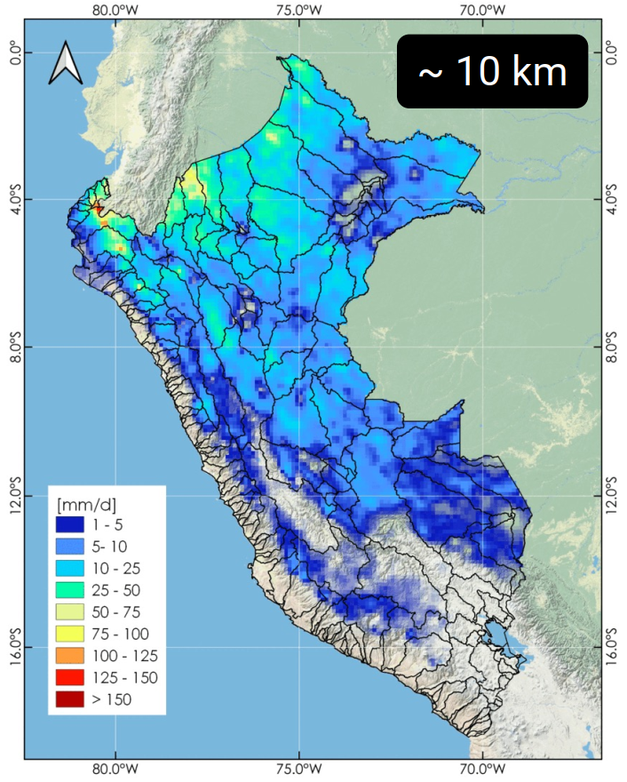
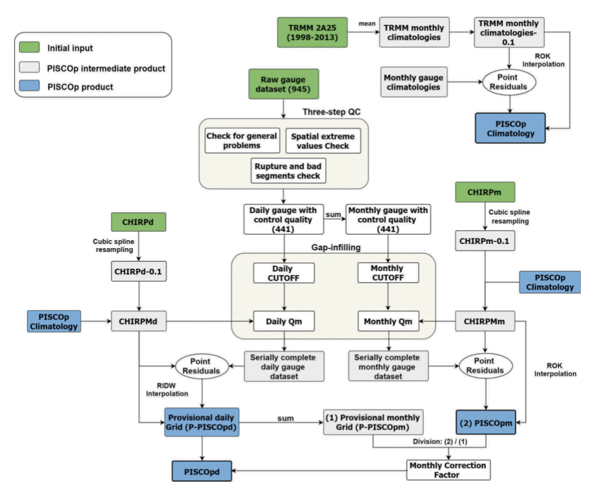
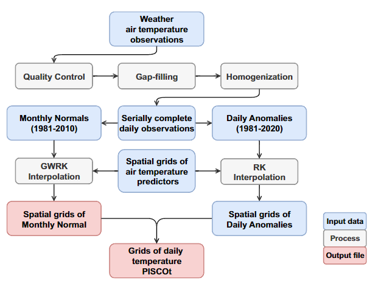
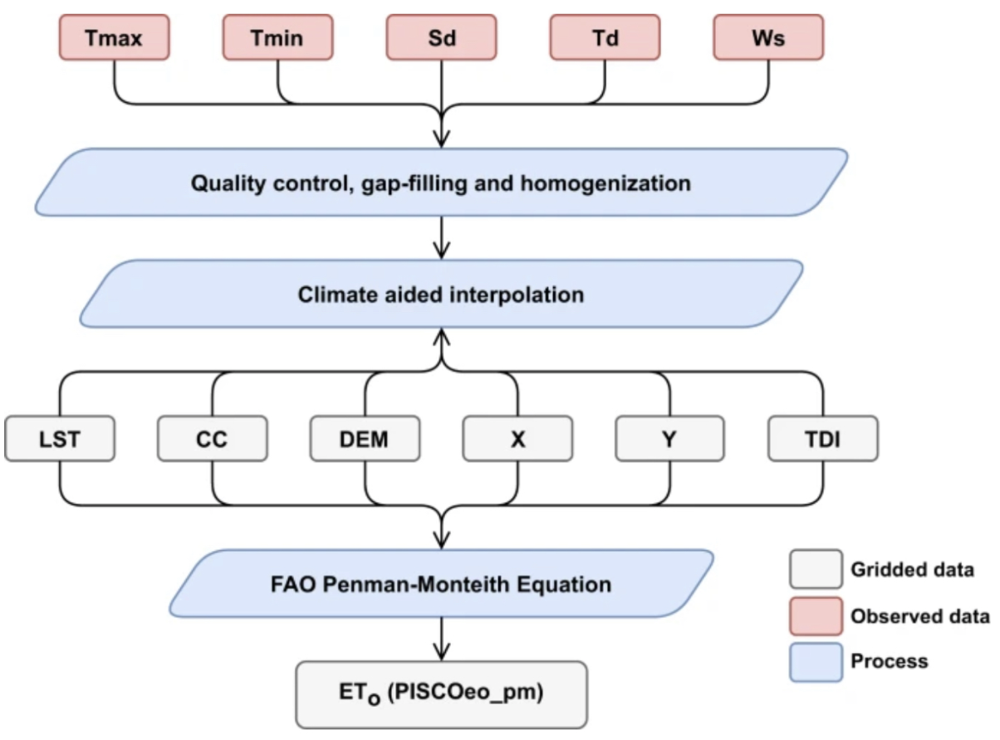
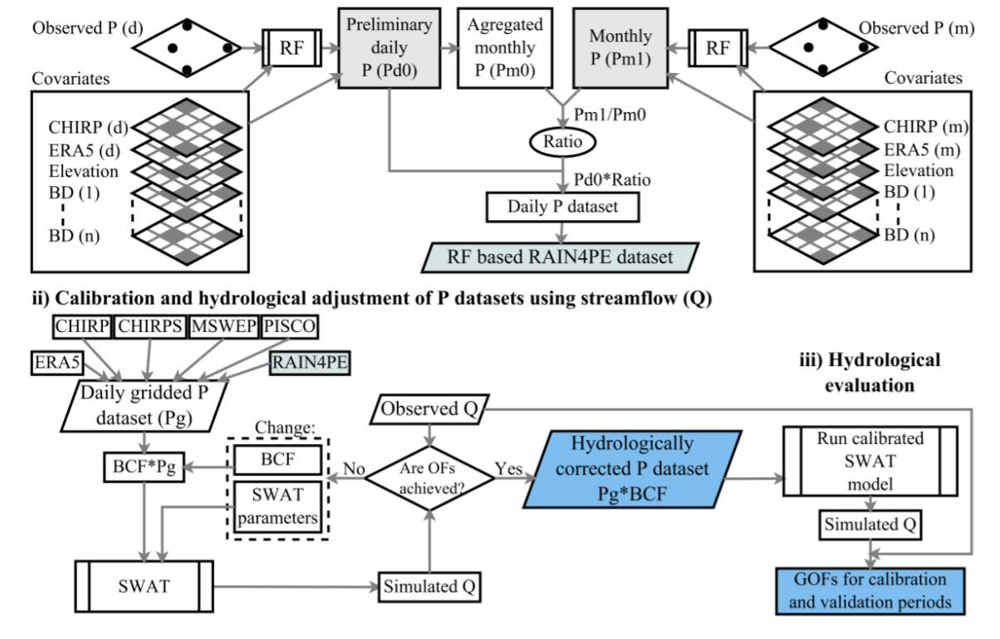
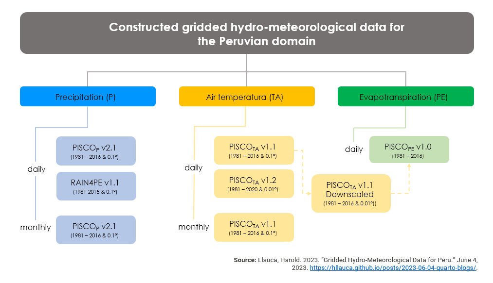

![]()
Ground hydro-meteorological observations are space-time limited in countries such as Peru. This data scarcity context impulses the use of Satellite Precipitation Products (SPP) in hydrological applications. SPPs provide gridded estimations of meteorological variables such as precipitation and air temperature with high temporal and spatial resolution. However; due to SPP biases, merging of ground information (gauges) and satellite information - using geostatistical techniques - might increase the representation of these variables in the whole country as is shown in the following figure.

Here, we describe gridded data-sets built for the Peruvian territory:
The PISCO product
The Peruvian Interpolated data of the SENAMHI’s Climatological and hydrological Observations (PISCO) is a hydro-meteorological gridded dataset developed for the Peruvian territory by the National Services of Meteorology and Hydrology of Peru (SENAMHI), including trans-boundary catchments with Ecuador and Colombia. PISCO contains sub-products of precipitation (P), air temperature (TA), and evapotranspiration (PE) variables.
The PISCOP sub-product is available from 1981 to 2016 (stable 2.1 version) at 0.1° spatial resolution. This precipitation sub-product (Aybar et al., 2020) is generated by using geostatistical and deterministic methods that include three precipitation sources: (a) the quality-controlled national rain gauge dataset, (b) radar-gauge merged precipitation climatologies, and (c) the Climate Hazards Group Infrared Precipitation (CHIRP) estimates, as is shown in the following figure. Also, an unstable version is available from 1981 to the present, and it is daily updated for SENAMHI’s operational purposes.

Similarly, PISCOTA version 1.1 (Huerta et al., 2018) is available from 1981 to 2016 at 0.1° spatial resolution, and it is obtained from: a) time series of maximum and minimum air temperature data, (b) a soil temperature product from the MODIS sensor (Moderate Resolution Imaging Spectroradiometer), and (c) geographic predictors (e.g., elevation, longitude, latitude and Topographic Dissection Index). Also, a new PISCOTA version 1.2 (Huerta et al., 2023) is now available. This new air temperature version captures complex spatial variability of maximum and minimum air temperature at a more accurate scale compared to the previous version, and it is available from 1981 to 2020 at 0.01° horizontal resolution.

Recently, the new PISCOPE sub-product (Huerta et al., 2022) has been generated with the Penman-Monteith equation following the scheme detailed below. Evapotranspiration sub-product is available from 1981 to 2016 at 0.01° spatial resolution. Note that it uses a downscaled version of the PISCOTA version 1.1.

The RAIN4PE product
According to the POTSDAM INSTITUTE FOR CLIMATE IMPACT RESEARCH (PIK), RAIN4PE (Fernandez-Palomino et al., 2021) is a novel daily gridded precipitation data set obtained by merging multi-source precipitation data (satellite-based Climate Hazards Group InfraRed Precipitation, CHIRP (Funk et al. 2015), reanalysis ERA5 (Hersbach et al. 2020), and ground-based precipitation) with terrain elevation using the random forest regression method. Furthermore, RAIN4PE is hydrologically corrected using streamflow data in catchments with precipitation underestimation through reverse hydrology. Hence, RAIN4PE is the only gridded precipitation product for Peru and Ecuador, which benefits from maximum available in-situ observations, multiple precipitation sources, elevation data, and is supplemented by streamflow data to correct the precipitation underestimation over páramos and montane catchments.

The RAIN4PE data are available for the terrestrial land surface between 19°S-2°N and 82-67°W, at 0.1° spatial and daily temporal resolution from 1981 to 2015. The precipitation data set is provided in netCDF format.
What is the NetCDF format?
The Network Common Data Form (NetCDF) is a format for the storage of multidimensional (variables) scientific data. There are a large number of software and libraries to read netCDF files such as Panoply software, the ncdf4 R package, or the netCDF4 package in Python.
The PISCO and RAIN4PE data-sets are available in the netCDF format, and consider one variable (precipitation, air temperature, or evapotranspiration) and three dimensions (longitude, latitude and time).
How to access these gridded data sets?
These data sets could be downloaded from Drive. Filenames follow the format “productname_timevariable_version.nc”, where the timevariable field is described as d = daily timestep; m = monthly timestep, pr = precipitation, tn = minimum air temperature, tx = maximum air temperature, and pe = evapotranspiration.

References
Aybar, Cesar, Carlos Fernández, Adrian Huerta, Waldo Lavado, Fiorella Vega, and Oscar Felipe-Obando. 2019. “Construction of a High-Resolution Gridded Rainfall Dataset for Peru from 1981 to the Present Day.” Hydrological Sciences Journal 65 (5): 770–85. https://doi.org/10.1080/02626667.2019.1649411.
Fernandez-Palomino, C.A., Hattermann, F.F., Krysanova, V., Lobanova, A., Vega-Jacome, ´ F., Lavado, W., Santini, W., Aybar, C., Bronstert, A., 2021. A novel highresolution gridded precipitation dataset for Peruvian and Ecuadorian watersheds – development and hydrological evaluation. J. Hydrometeorol. 1. https://doi. org/10.1175/jhm-d-20-0285.1.
Huerta, A.; Aybar, C.; Lavado-Casimiro, W. PISCO temperatura v.1.1. SENAMHI - DHI-2018, Lima-Perú. Available on http://iridl.ldeo.columbia.edu/documentation/.pisco/.PISCOt_report.pdf.
Huerta, Adrian, Vivien Bonnesoeur, José Cuadros-Adriazola, Leonardo Gutierrez, Boris F. Ochoa-Tocachi, Francisco Román-Dañobeytia, and Waldo Lavado-Casimiro. 2022. “PISCOeo_pm, a Reference Evapotranspiration Gridded Database Based on FAO Penman-Monteith in Peru.” Scientific Data 9 (1). https://doi.org/10.1038/s41597-022-01373-8.
Huerta, A., Aybar, C., Imfeld, N., Correa, K., Felipe-Obando, O., Rau, P., Drenkhan, F., & Lavado-Casimiro, W. (2023). High-resolution grids of daily air temperature for Peru - the new PISCOt v1.2 dataset. Scientific Data, 10(1), 847. https://doi.org/10.1038/s41597-023-02777-w
Citation
@online{llauca2023,
author = {Llauca, Harold},
title = {Gridded Hydro-Meteorological Data for {Peru}},
date = {2023-06-04},
url = {https://hllauca.github.io/posts/2023-06-04-quarto-blogs/},
langid = {en}
}